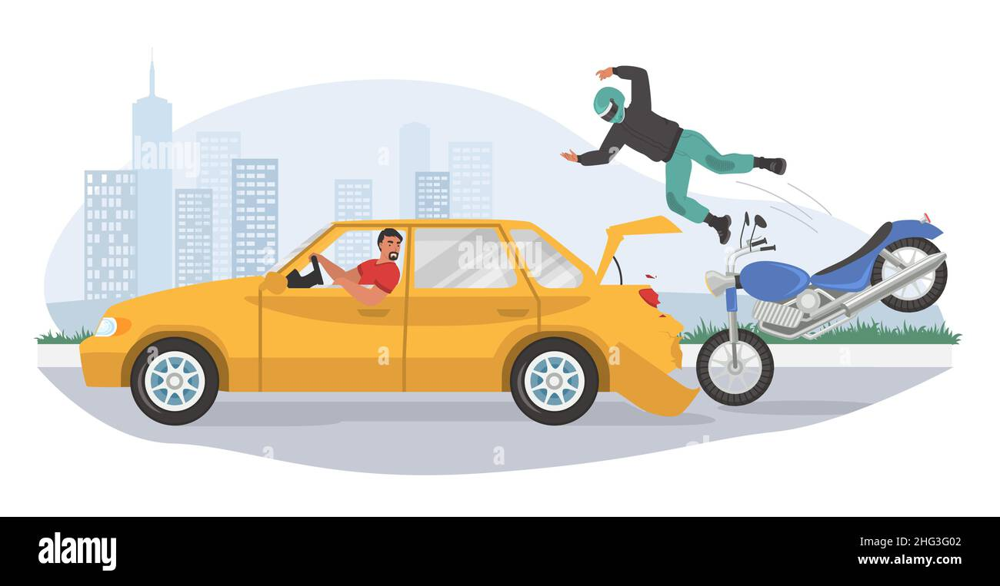
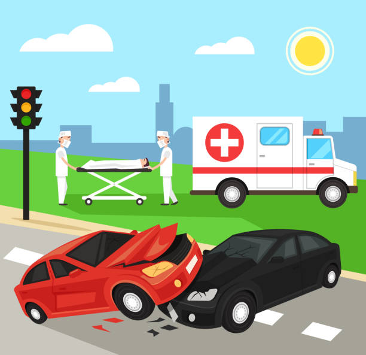

Scenario 1: Emergency Braking vs Evasive Manoeuvre
Setting:Imagine you're settled into an autonomous vehicle, enjoying a cup of coffee and your go-to podcast. You're at ease, and why wouldn't you be? The dashboard tells you you're just a brief 10-minute drive from your destination. You're navigating a city street at a legal speed, no worries—until the vehicle's alarm system activates. An urgent message flashes across the dashboard: "Obstacle detected. Immediate action required."
Options for Action:
- Alert You: The car informs you that it can execute an emergency braking procedure to avoid colliding with a pedestrian who has unexpectedly entered the roadway. The caveat here is the presence of a vehicle tailgating you. Should you choose this course of action, the risk of a rear-end collision increases substantially. This raises questions about the potential injuries to you and the occupants of the tailgating vehicle.
- Risk: Option 1 Increases the chance of a rear-end collision with the tailgating vehicle, potentially causing injuries to you and the occupants of the other car.
- Alert You:Alternatively, the vehicle offers the possibility of an evasive manoeuvre. It can swerve into an adjacent, temporarily unoccupied lane to sidestep the pedestrian. However, this option isn't without its drawbacks. The manoeuvre would be abrupt, posing a potential risk of physical injury due to the sudden jolt. Additionally, the momentarily empty adjacent lane will not remain so for long; another vehicle is swiftly approaching.
- Risk: Option 2 Abrupts swerving could cause physical injury due to the sudden movement, and there's a risk of colliding with another vehicle approaching the adjacent lane.

